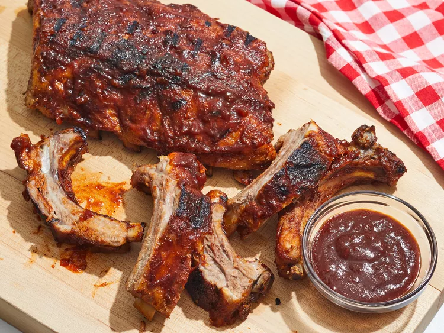

Spareribs
Home

Indulge in the mouthwatering flavors of these tender, caramelized spareribs! This recipe combines the savory depth of soy sauce with the sweet touch of brown sugar,
aromatic garlic and ginger, and a hint of tang from rice vinegar. The result? A sticky, flavorful glaze that coats perfectly cooked pork ribs. Marinated to perfection
and baked until fall-off-the-bone tender, these spareribs are guaranteed to be a hit
Ingredients
- 2 lbs pork spareribs, cut into individual ribs
- 1/2 cup soy sauce
- 1/4 cup brown sugar
- 3 cloves garlic, minced
- 1 tablespoon ginger, minced
- 1/4 cup rice vinegar
- 1 tablespoon sesame oil
- 1 teaspoon ground black pepper
- 1/2 cup water
- Green onions, chopped (for garnish)
Steps
- In a bowl, combine soy sauce, brown sugar, minced garlic, minced ginger, rice vinegar, sesame oil, and ground black pepper. Mix well.
- Place the spareribs in a large resealable bag or container. Pour the marinade over the ribs, ensuring they are well coated. Marinate for at least 1 hour, or preferably overnight, in the refrigerator.
- Preheat oven to 350°F (175°C).
- Arrange the marinated spareribs in a single layer on a baking sheet. Pour any remaining marinade over the ribs.
- Add 1/2 cup of water to the baking sheet.
- Cover the baking sheet with foil and bake for 1 hour, or until the ribs are tender.
- Remove the foil and bake for another 15-20 minutes, or until the ribs are caramelized and the sauce has thickened.
- Garnish with chopped green onions before serving.
- Serve hot with rice.